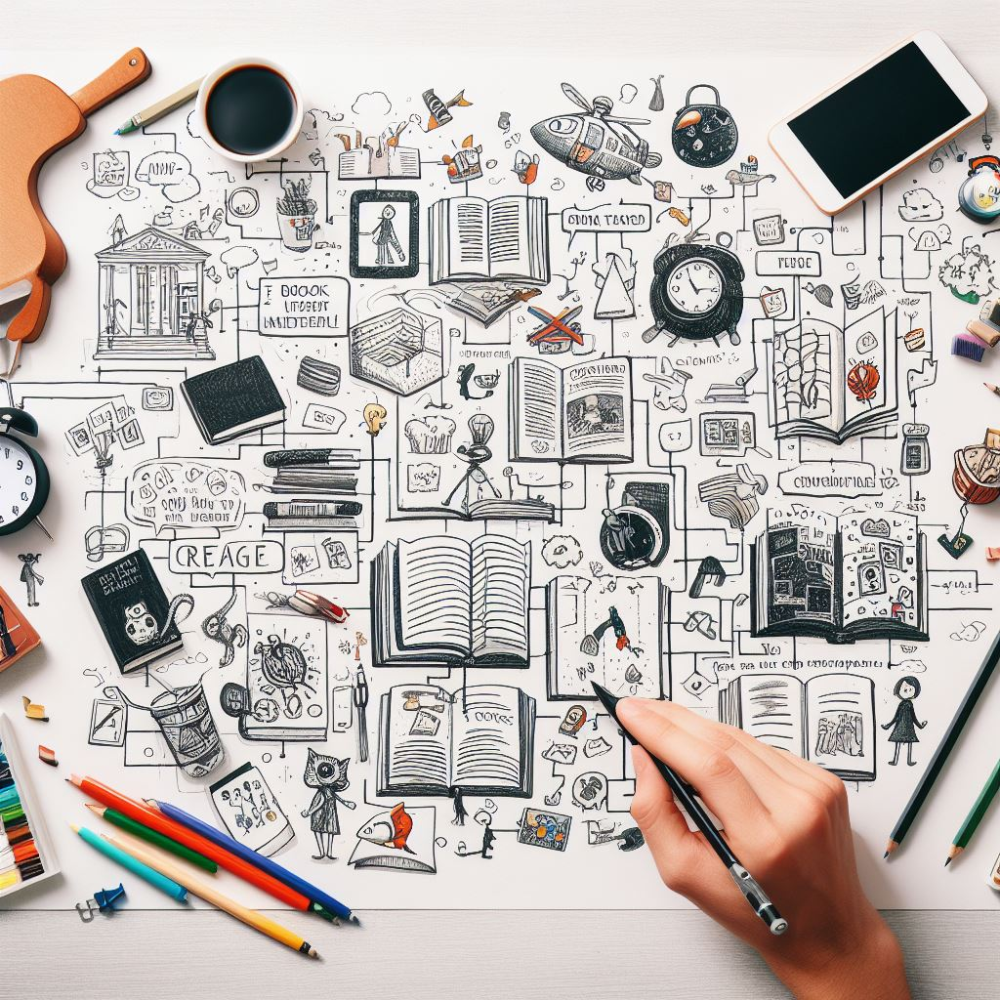
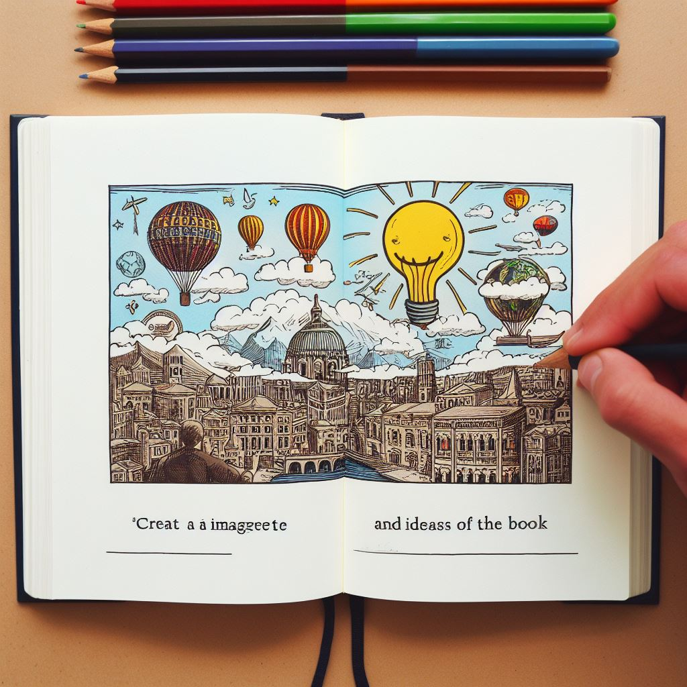

Escolha os livros que você deseja ler e planeje um cronograma de leitura.
Tire anotações sobre os principais pontos e ideias do livro.
Se precisar de informações adicionais, faça uma pesquisa na biblioteca virtual.
Converse com outros leitores sobre suas experiências e troque opiniões.
Aproveite a biblioteca virtual para aprimorar suas habilidades e se preparar para futuros desafios.